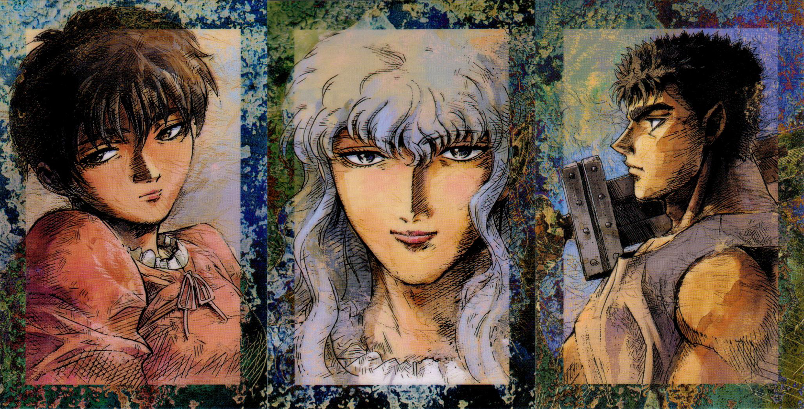
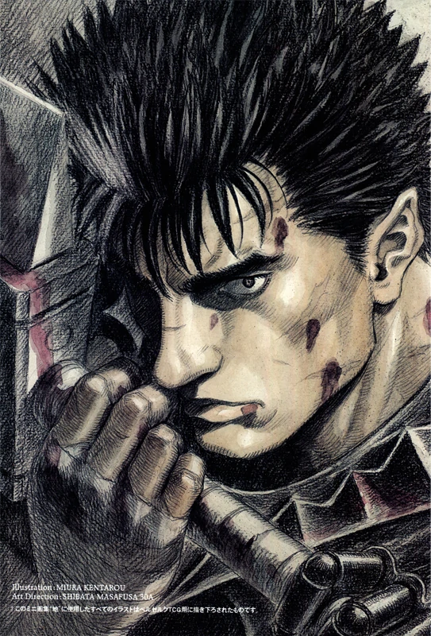
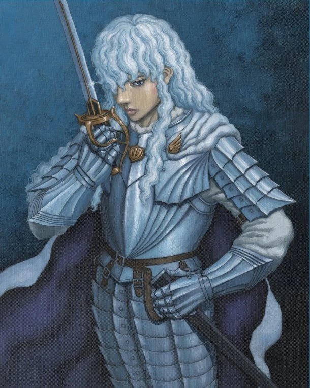
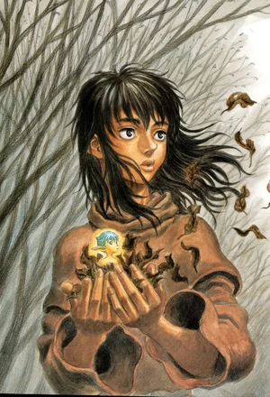

P e r s o n a g e n s
- P r i n c i p a i s -
G U T S
Guts (ガッツ Gattsu?) é o personagem principal de Berserk. Ele era o antigo líder da unidade de ataque de um grupo de mercenários conhecido como Bando do Falcão.
Guts é atacado por um grupo de mercenários do Bando do Falcão, liderados por Corkus. Durante o ataque mal-sucedido, Guts mata Dante e corta o braço de Eal. Corkus então manda outro mercenário, Riggel, atacar, mas ele questiona por que deveria ir. Guts se prepara para atacar Corkus, mas é impedido por Casca, que dispara uma seta em seu braço. Ela diz que havia interferido por ordens de Griffith, e ataca Guts a cavalo com sua espada. Guts remove a seta e se defende, derrubando-a da montaria e expondo seu rosto.

A batalha continua, e Casca logo é derrotada. Guts é impedido de mata-la por uma lança arremessada a seus pés por Griffith. Os dois começam a lutar após Griffith pedir se Guts se renderia, e o estilo de esgrima refinado que o líder do bando utiliza o surpreende. Griffith acerta uma estocada entre o ombro esquerdo e o peito de Guts, que cai no chão após tentar um novo ataque. Depois de ver o rosto de Griffith, Guts desmaia.
Guts começa a recordar a consciência pela manhã, notando que uma mulher havia dormido a seu lado, e acorda no acampamento do Bando do Falcão. Ele reconhece Casca como quem havia dormido a seu lado, e ela acerta um soco no ferimento coberto de Guts, dizendo que ele deveria ter morrido nas mãos de Griffith. Griffith havia ordenado que ela permanecesse ao lado de Guts durante a noite, já que ele havia perdido muito sangue.
G R I F F I T H
Griffith é o antagonista principal de Berserk. Ele é o fundador e líder dos grupos mercenários Bando do Falcão e o Novo Bando do Falcão, o governador da cidade de Falconia e o quinto membro da Mão de Deus; conhecido como Femt.
Como uma criança de nascimento plebeia, destinado a governar algum dia um reino próprio, recebendo o Behelit vermelho, Griffith criou o Bando do Falcão. A grande chance de Griffith veio pela primeira vez quando ele e seu grupo foram trazidos a serviço de Lorde Gennon, o qual ofereceu remuneração extra para o jovem dormir com ele.
Na época em que Guts e os membros do Bando dos Falcões vieram resgatá-lo, Griffith foi deixado mudo e aleijado, tendo sido torturado por um ano inteiro. Quando Griffith tenta coeter suicídio ao perceber ao que ele foi reduzido a um ser inútil , ele machucou-se e sangrou e ativa o Behelit vermelho para o Eclipse. Onde a Mão de Deus se manifestou para receber Griffith. É dado a Griffith a escolha de renascer como o último da Mão de Deus, sabendo que sua transformação significaria que seus aliados seriam sacrificados aos Apóstolos. Griffith aceita a oferta por causa de seu sonho e, enquanto os Falcões eram mortos, aparece diante dele o Idéia do Mal por trás da Mão de Deus. Ele contou que tudo o que ele passou foi o que levou a esse momento, Griffith então aceitou seu destino de se tornar um rei, criando o seu corpo ideal.
C a s k a
Casca (キャスカ, Kyasuka) é a protagonista feminina de Berserk e era a única mulher no Bando do Falcão.
Como uma jovem de origem humilde, Casca considerava dificuldades, tais como fome e sequestro, um fato normal da vida de camponesa. No entanto, depois de ter sido quase estuprada por um nobre, ela escolheu lutar, antes de ser auxiliada por Griffith, o qual ofereceu a ela uma espada para se defender. Matando o nobre ela mesma, Casca passa a seguir Griffith, tornando-se uma guerreira estoica, endurecida, e imensamente leal no processo.
O comportamento frio de Casca esconde seu próprio passado resultante de sua infância traumática, e os desafios que ela enfrentou por causa do preconceito em relação ao seu sexo. Após a prisão de Griffith, ela passou um ano agindo como a líder do Bando do Falcão na ausência do Falcão e de Guts, o que a deixou ainda mais amargurada com Guts. No entanto, os dois (Guts e Casca), eventualmente, se conciliaram e reconheceram que a relação deles era mais do que apenas a de meros companheiros de luta no campo de batalha, e sim como, praticamente, namorados.
Após o Eclipse, a personalidade de Casca é completamente apagada, sua fala e sanidade são roubadas, e quaisquer abordagens feitas por um homem, sendo com intenção sexual ou não, desencadeiam a lembrança da violação sofrida nas mãos do demônio Femto. Quando vários bandidos tentaram estuprá-la, ela freneticamente matou todos eles em resposta, e até mesmo atacou Guts em um ataque de pânico. Casca se mostrou sentir relativamente segura perto de Guts, tendo o reconhecido como um protetor, mas começou a temê-lo após ele a atacar enquanto estava possuído. Ela também parece possuir um forte instinto maternal, como mostrado quando ela tentou proteger o seu filho de Guts enfurecido, o qual não sabia que o filho era seu também.